Image Recognition (9 types of National Flowers)

Implemented an image recognition classifier which is run across 9 labels (flowers) with 500 images per label.
Dataset

This data set contains 9 different types of flowers. Your task is to build a machine-learning or deep-learning model that can classify these images as flowers. These classes are:
- Daisy
- Dandelion
- Lavender
- Lilly
- Lotus
- Orchid
- Rose
- Sunflower
- Tulip
Code
#Import packages and models from torch.utils.data import Dataset,DataLoader from torchvision.datasets import ImageFolder import matplotlib.pyplot as plt import numpy as np import pandas as pd import timm from tqdm.notebook import tqdm import torch import torch.nn as nn import torch.optim as optim import torchvision.transforms as transforms 🗸 4.3s#Declare FlowersDataSet class class FlowersDataSet(Dataset): def __init__(self,data_dir,transform=None): self.data=ImageFolder(data_dir,transform=transform) def __len__(self): return len(self.data) def __getitem__(self,idx): return self.data[idx] @property def classes(self): return self.data.classes 🗸 0.0sdata_dir='../data/Image recognition/flowerdataset/whole data' #original_dataset noc= 9 #Number of classes original_dataset=FlowersDataSet(data_dir) 🗸 0.0slen(original_dataset) #length of the dataset 🗸 0.0s4481
#get any image and its label from the dataset to confirm it is working image,label=original_dataset[5] print(label) image 🗸 0.0s0
#Get a dictionary associating target values with folder names target_to_class={v:k for k,v in ImageFolder(data_dir).class_to_idx.items()} print(target_to_class) 🗸 0.0s{0: 'Daisy', 1: 'Dandelion', 2: 'Lavender', 3: 'Lilly', 4: 'Lotus', 5: 'Orchid', 6: 'Rose', 7: 'Sunflower', 8: 'Tulip'}
#Making sure that images are always 160x160 transform=transforms.Compose([ transforms.Resize((160,160)), transforms.ToTensor(), ]) 🗸 0.0s#Train-test spliting original_dataset=FlowersDataSet(data_dir,transform) train_size=int(0.6*len(original_dataset)) valid_size=int(0.2*len(original_dataset)) test_size=len(original_dataset)-(train_size+valid_size) train_size+=len(original_dataset)-(train_size+valid_size+test_size) train_dataset, valid_dataset, test_dataset=torch.utils.data.random_split( original_dataset, [train_size, valid_size, test_size] ) #Running it for a random image image,label=train_dataset[100] print(image) print(image.shape) 🗸 0.2stensor([[[1.0000, 1.0000, 1.0000, ..., 1.0000, 1.0000, 1.0000], [1.0000, 1.0000, 1.0000, ..., 1.0000, 1.0000, 1.0000], [1.0000, 1.0000, 1.0000, ..., 1.0000, 1.0000, 1.0000], ..., [0.0039, 0.0039, 0.0039, ..., 0.0039, 0.0039, 0.0039], [0.0039, 0.0039, 0.0039, ..., 0.0039, 0.0039, 0.0039], [0.0039, 0.0039, 0.0039, ..., 0.0039, 0.0039, 0.0039]], [[1.0000, 1.0000, 1.0000, ..., 1.0000, 1.0000, 1.0000], [1.0000, 1.0000, 1.0000, ..., 1.0000, 1.0000, 1.0000], [1.0000, 1.0000, 1.0000, ..., 1.0000, 1.0000, 1.0000], ..., [0.0039, 0.0039, 0.0039, ..., 0.0039, 0.0039, 0.0039], [0.0039, 0.0039, 0.0039, ..., 0.0039, 0.0039, 0.0039], [0.0039, 0.0039, 0.0039, ..., 0.0039, 0.0039, 0.0039]], [[1.0000, 1.0000, 1.0000, ..., 1.0000, 1.0000, 1.0000], [1.0000, 1.0000, 1.0000, ..., 1.0000, 1.0000, 1.0000], [1.0000, 1.0000, 1.0000, ..., 1.0000, 1.0000, 1.0000], ..., [0.0039, 0.0039, 0.0039, ..., 0.0039, 0.0039, 0.0039], [0.0039, 0.0039, 0.0039, ..., 0.0039, 0.0039, 0.0039], [0.0039, 0.0039, 0.0039, ..., 0.0039, 0.0039, 0.0039]]]) torch.Size([3, 160, 160])
#iterate over the dataset using dataloader after batching for faster training dataloader=DataLoader(train_dataset,batch_size=32,shuffle=True) for images,labels in dataloader: break images.shape,labels.shape 🗸 0.5s(torch.Size([32, 3, 160, 160]), torch.Size([32]))
#creating a pytorch model by inheriting from nn module class SimpleFaceClassifier(nn.Module): def __init__(self,num_classes=noc): super(SimpleFaceClassifier,self).__init__() #Here we define all the parts of the model self.base_model=timm.create_model('efficientnet_b0',pretrained=True) self.features=nn.Sequential(*list(self.base_model.children())[:-1]) enet_out_size=self.base_model.classifier.in_features #Make a classifier to resize to our number of classes self.classifier = nn.Sequential( nn.Flatten(), nn.Linear(enet_out_size, num_classes) ) def forward(self,x): #Connect these parts and return the output x = self.features(x) output = self.classifier(x) return output 🗸 0.0s#creating an instance of the classifier class to check model=SimpleFaceClassifier(num_classes=noc) print(str(model)[:500]) 🗸 0.9sSimpleFlowerClassifier( (base_model): EfficientNet( (conv_stem): Conv2d(3, 32, kernel_size=(3, 3), stride=(2, 2), padding=(1, 1), bias=False) (bn1): BatchNormAct2d( 32, eps=1e-05, momentum=0.1, affine=True, track_running_stats=True (drop): Identity() (act): SiLU(inplace=True) ) (blocks): Sequential( (0): Sequential( (0): DepthwiseSeparableConv( (conv_dw): Conv2d(32, 32, kernel_size=(3, 3), stride=(1, 1), padding=(1, 1), groups=32, bias=
#ensuring that model works without any errors example_out=model(images) example_out.shape 🗸 0.9storch.Size([32, 9])
#loss function
criterion=nn.CrossEntropyLoss()
#optimizer
optimizer=optim.Adam(model.parameters(),lr=0.001)
🗸 0.0s#ensuring that the shapes match
criterion(example_out,labels)
print(example_out.shape,labels.shape)
🗸 0.0storch.Size([32, 9]) torch.Size([32])transform=transforms.Compose(
[
transforms.Resize((160,160)),
transforms.ToTensor(),
]
)
#create specific loader for these datasets
train_loader=DataLoader(train_dataset,batch_size=32,shuffle=True)
test_loader=DataLoader(test_dataset,batch_size=32,shuffle=False)
valid_loader=DataLoader(valid_dataset,batch_size=32,shuffle=False)
🗸 0.0s#We define the device for the model to run on:
device=torch.device('cuda:0' if torch.cuda.is_available() else 'cpu')
device
🗸 0.0sdevice(type='cuda', index=0)
#running through the entire dataset num_epochs=2 #number of times the model goes through the data train_losses,valid_losses,epochs=[],[],[] #lists to catch 'training losses', 'validation losses' and epochs. model=SimpleFlowerClassifier(num_classes=noc) #calling the model 'SimpleFlowerClassifier' model.to(device) #moving the model to the GPU #Loss function criterion=nn.CrossEntropyLoss() #Optimizer optimizer=optim.Adam(model.parameters(),lr=0.001) #looping through epochs (number of times the model goes through the data) for epoch in range(num_epochs): model.train() #set the model to train running_loss=0.0 #setting a temporary loss variable to '0' #looping through the training dataset loader for images,labels in tqdm(train_loader,desc='Training Loop'): images,labels=images.to(device),labels.to(device) #moving the images and labels to the GPU optimizer.zero_grad() #clear the optimizer gradients outputs=model(images) #catching the outputs after running through the model loss=criterion(outputs,labels) #comparing the output to the labels and #assigning a 'loss' through loss function loss.backward() #compute the gradient according to the loss optimizer.step() #update the optimizer weights accordingly running_loss+=loss.item()*labels.size(0) #increments the 'running loss' by the product of #current loss and the 'batch size' #calculating the training loss by dividing the 'running loss' by the length of 'training dataset' train_loss=running_loss/len(train_loader.dataset) #appending the current 'training loss' to the 'training losses' list train_losses.append(train_loss) model.eval() #set the model to train running_loss=0.0 #setting a temporary loss variable to '0' with torch.no_grad(): #To disable the gradient calculations #looping through the validation dataset loader for images,labels in tqdm(valid_loader,desc='Validation Loop'): images,labels=images.to(device),labels.to(device) #moving the images and labels to the GPU outputs=model(images) #catching the outputs loss=criterion(outputs,labels) #comparing the output to the labels and #assigning a loss through loss function running_loss+=loss.item()*labels.size(0) #increments the 'running loss' by the product #of current 'loss' and the 'batch size' #calculating the validation loss by dividing the 'running loss' by the length of 'validation dataset' valid_loss=running_loss/len(valid_loader.dataset) #appending the current 'validation loss' to the 'validation losses' list valid_losses.append(valid_loss) #appending the current 'epoch' number to the 'epochs' list; epoch+1 because epoch starts from 0 epochs.append(epoch+1) #Print epoch statistics print(f"Epoch {epoch+1}/{num_epochs} - Training Loss: {train_loss}, Validation Loss: {valid_loss}") 🗸 19.4sTraining Loop: 100% 84/84 [01:44<00:00, 1.41s/it] Validation Loop: 100% 28/28 [00:17<00:00, 1.31it/s] Epoch 1/2 - Training Loss: 0.7699483739478248, Validation Loss: 0.5333579427429608
Training Loop: 100% 84/84 [01:00<00:00, 2.18it/s] Validation Loop: 100% 10/10 28/28 [00:06<00:00, 4.67it/s] Epoch 2/2 - Training Loss: 0.3766560448954503, Validation Loss: 0.4882693184273584
plt.plot(epochs,train_losses,label='Training Loss') plt.plot(epochs,valid_losses,label='Validation Loss') plt.xlabel('epochs') plt.ylabel('loss') plt.legend() plt.title('Loss over epochs') plt.show() 🗸 0.1s
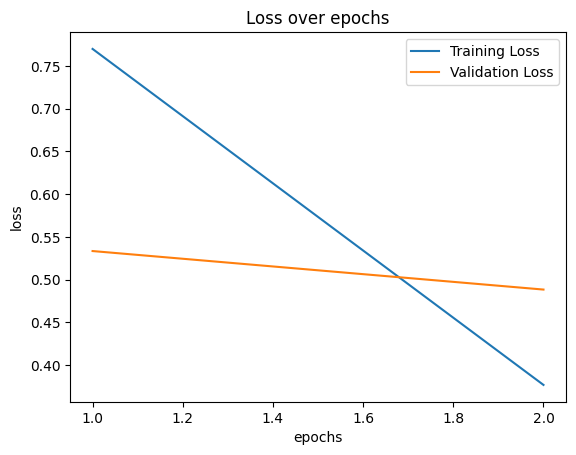
#Load and preprocess the image: def preprocess_image(image_path,transform): image=Image.open(image_path).convert('RGB') return image,transform(image).unsqueeze(0) #Predict using the model: def predict(model, image_tensor,device): model.eval() with torch.no_grad(): image_tensor=image_tensor.to(device) outputs=model(image_tensor) probabilities =torch.nn.functional.softmax(outputs,dim=1) return probabilities.cpu().numpy().flatten() #Visualization def visualize_predictions(original_image,probabilities,class_names): fig,axarr=plt.subplots(1,2,figsize=(12,25)) #Display image axarr[0].imshow(original_image) axarr[0].axis('off') #Display predictions axarr[1].barh(class_names,probabilities) axarr[1].set_xlabel('Probabilities') axarr[1].set_ylabel('Class Predictions') axarr[1].set_xlim(0,1) plt.tight_layout() plt.show() #Example using a hard-coded image test_image='../data/Image recognition/flowerdataset/whole data/Daisy/9350942387_5b1d043c26_n.jpg' transform=transforms.Compose( [ transforms.Resize((160,160)), transforms.ToTensor() ] ) original_image,image_tensor=preprocess_image(test_image,transform) probabilities=predict(model,image_tensor,device) #getting the class names from the model classifier class_names = train_dataset.dataset.classes visualize_predictions(original_image,probabilities,class_names) 🗸 0.5s
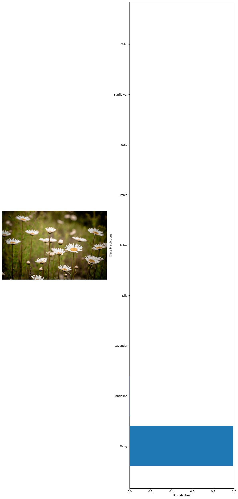
#getting 10 random images from the whole dataset test_images=glob('../data/Image recognition/flowerdataset/whole data/*/*') test_examples=np.random.choice(test_images,10) #declaring a variable to calculate the number of current predictions num_correct = 0 #getting the total number of images total_examples = len(test_examples) for example in test_examples: original_image, image_tensor = preprocess_image(example, transform) probabilities = predict(model, image_tensor, device) #getting the class names from the model classifier class_names = train_dataset.dataset.classes #extract true label from file path true_label = example.split('\\')[1] #since class folder name is the label # Get predicted label predicted_label_index = np.argmax(probabilities) predicted_label = class_names[predicted_label_index] # Check if prediction is correct if predicted_label == true_label: num_correct += 1 # Print the true label and the predicted label print("True label:", true_label) print("Predicted label:", predicted_label) visualize_predictions(original_image, probabilities, class_names) #calculating the accuracy accuracy = num_correct / total_examples print("Accuracy:", accuracy) 🗸 4.4sTrue label: Sunflower Predicted label: Sunflower
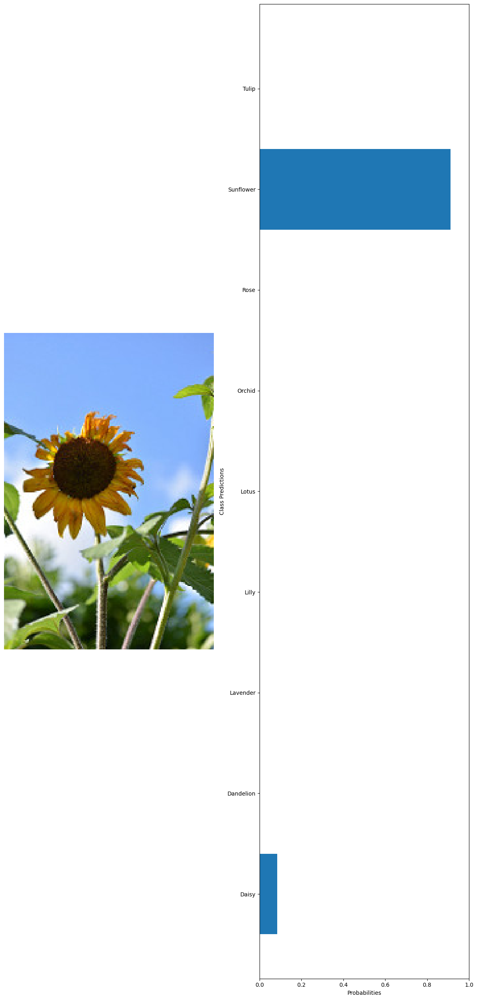
True label: Lotus Predicted label: Lotus
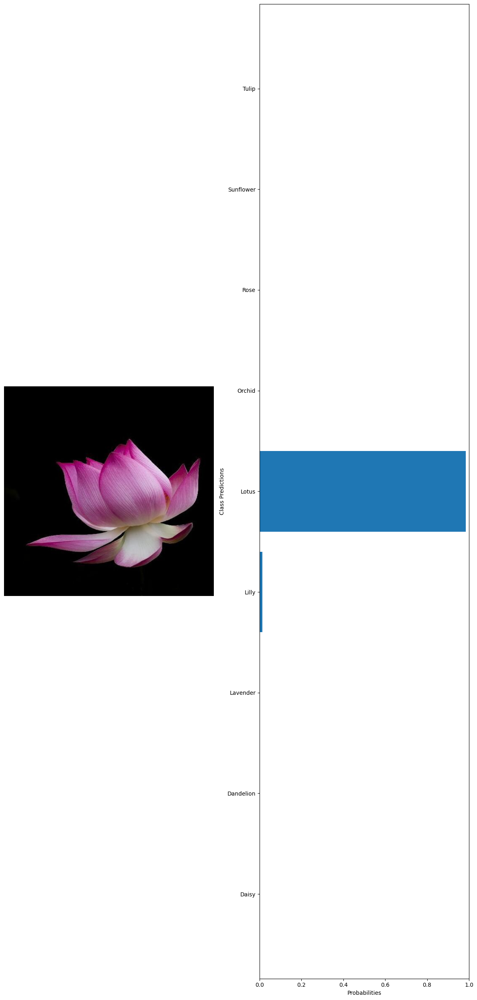
True label: Dandelion Predicted label: Dandelion
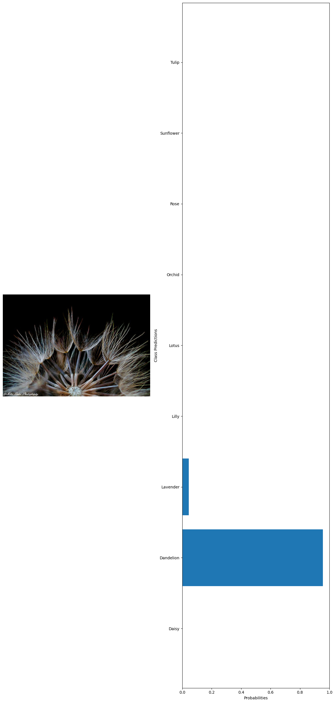
True label: Orchid Predicted label: Orchid
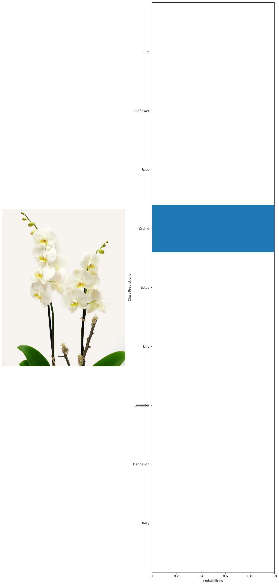
True label: Tulip Predicted label: Tulip
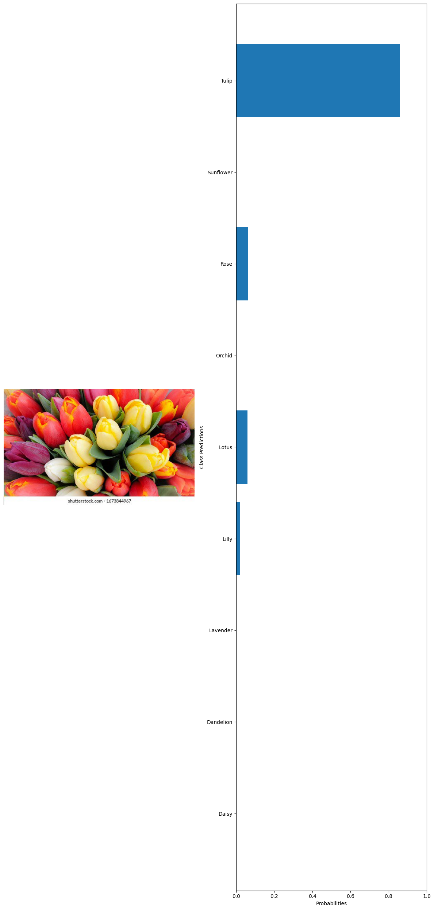
True label: Dandelion Predicted label: Dandelion
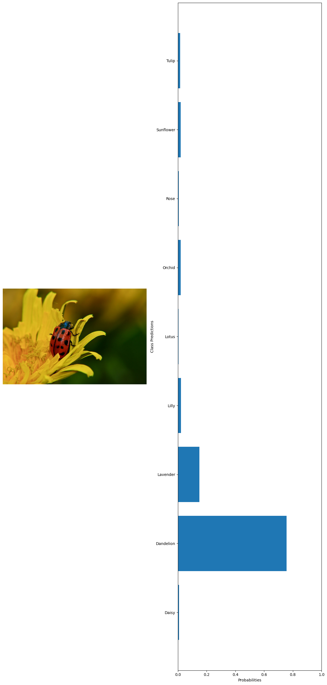
True label: Sunflower Predicted label: Sunflower
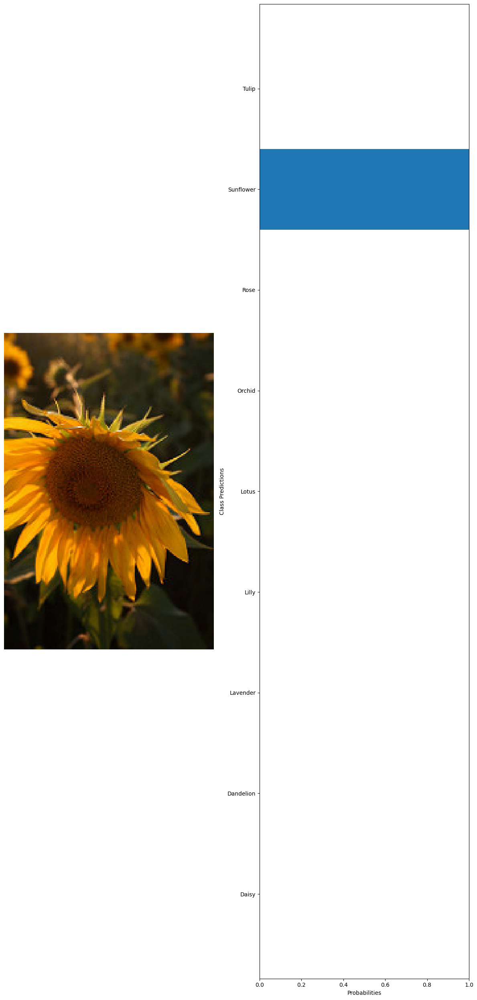
True label: Orchid Predicted label: Orchid
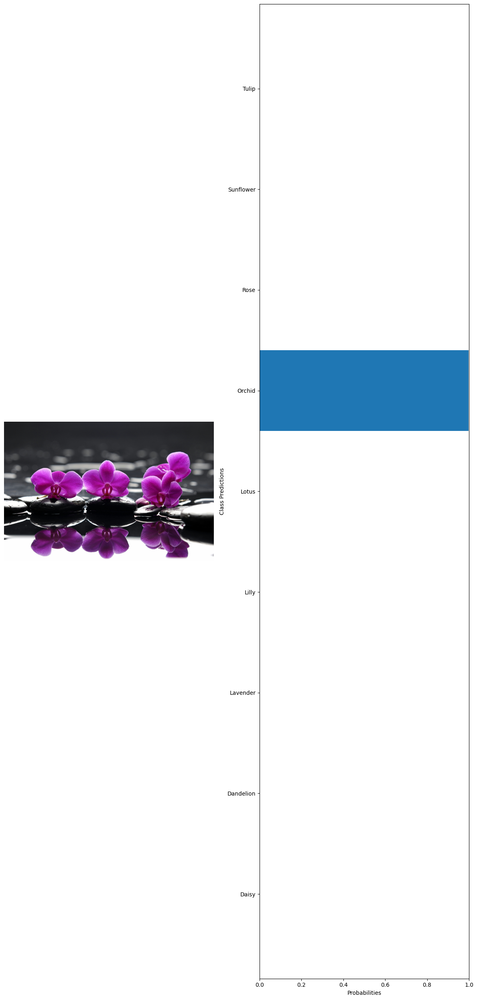
True label: Lotus Predicted label: Lotus
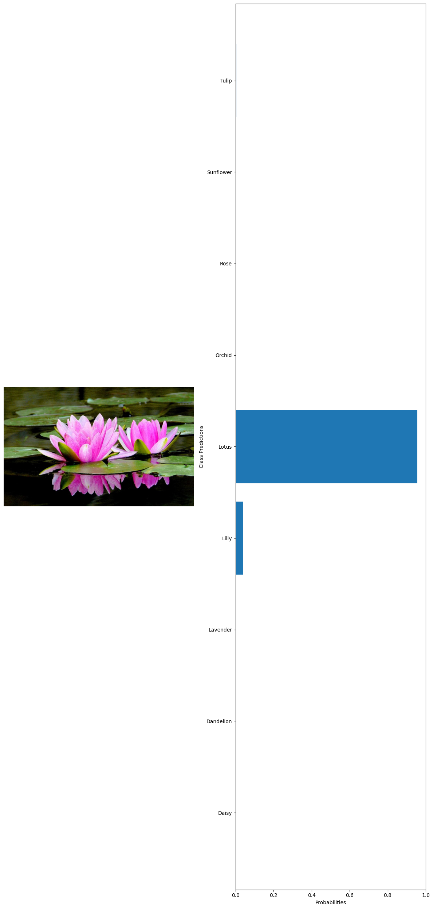
True label: Rose Predicted label: Rose
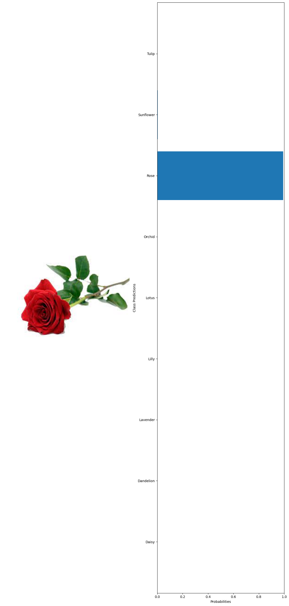
Accuracy: 1.0
Phone
(+91) 9645-095-759Address
Kallampali, Punnappala P.OWandoor, Malappuram Dist
Kerala, India